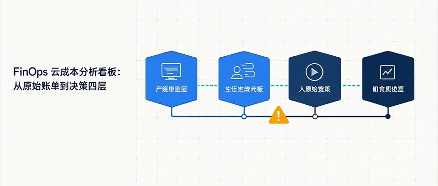
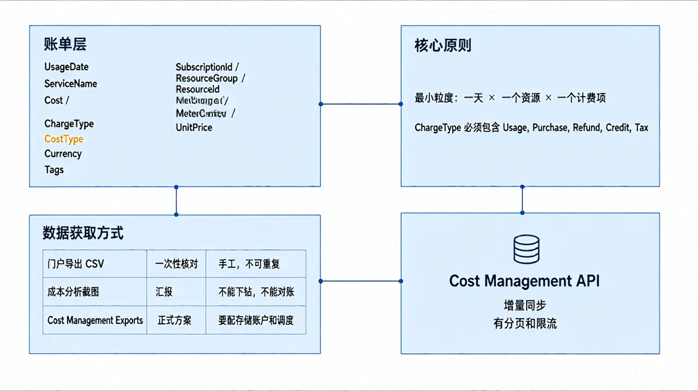
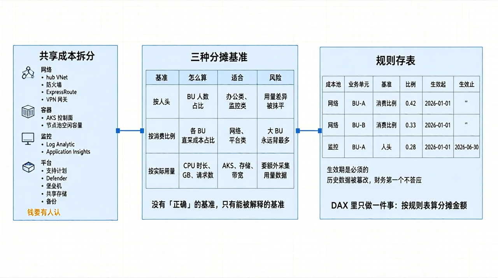
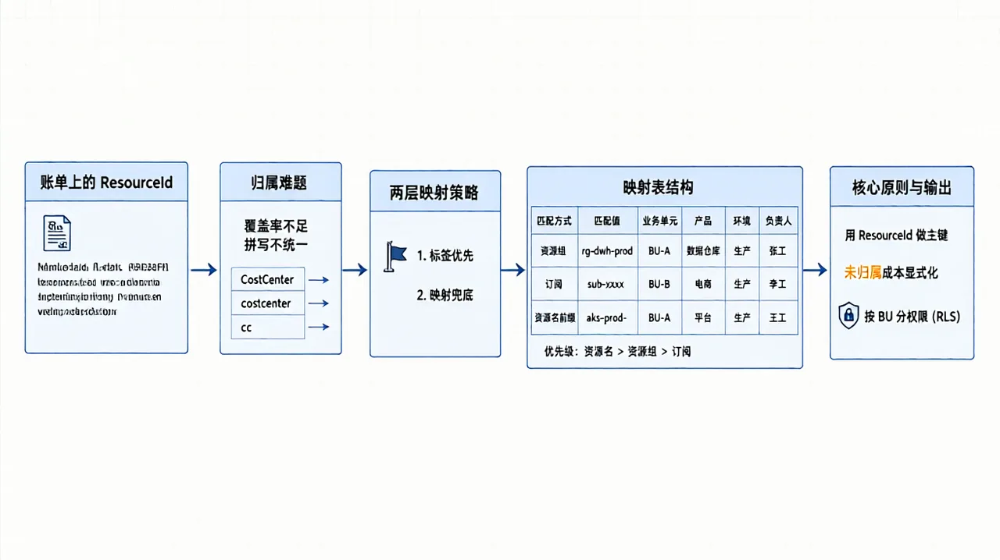
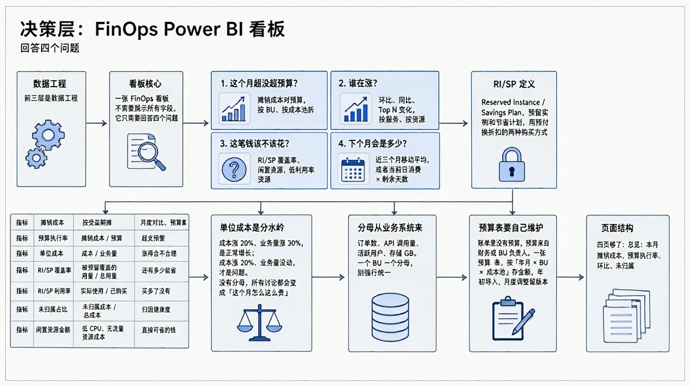

FinOps 云成本分析看板：从原始账单到决策四层
云成本看板不是账单复读机。账单、分摊、归属、决策四层，每层要什么数据、哪里最容易错，一次讲清。

FinOps Power BI 看板难的不是画图，是账单进到 Power BI 之前的那三步。直接拿 Azure 成本分析的截图拼一页，一周能做完，然后没人打开。它回答不了三个问题：这个月为什么涨、这笔钱该谁负责、下个月会是多少。
这篇讲一套四层模型：账单、分摊、归属、决策。每层说清楚要什么数据、输出什么、最容易错在哪。之前做的 FinOps 看板，27 个业务单元、28 个 RLS 角色，结构就是在这四层上定下来的。想先看成品长什么样，案例 页有；只想把账单接进来自己搭，往下看。
一、账单层：先把数据搬对
看板的上限由账单层决定。这一层错了，后面三层全是错的。
要什么数据
最小粒度是「一天 × 一个资源 × 一个计费项」。字段至少这些：
- UsageDate：用量日期，不是导出日期
- SubscriptionId / ResourceGroup / ResourceId
- ServiceName / MeterName / MeterCategory
- Cost / Quantity / UnitPrice
- ChargeType：Usage、Purchase、Refund、Credit、Tax
- CostType：Actual 还是 Amortized
- Currency
- Tags
有两个字段最容易被忽略。
ChargeType。很多人只取 Usage，结果退款、信用额度、税全丢了。明细加总永远对不上财务，原因就在这里。
CostType。Actual cost（实际成本）按发生记账，买预留实例那个月会突然冒出一大笔；Amortized cost（摊销成本）把预付费用摊到受益期，月度对比要用它。两个都导，别混着算。
怎么取
| 方式 | 适合 | 问题 |
|---|---|---|
| 门户导出 CSV | 一次性核对 | 手工，不可重复 |
| 成本分析截图 | 汇报 | 不能下钻，不能对账 |
| Cost Management Exports | 正式方案 | 要配存储账户和调度 |
| Cost Management API | 增量同步 | 有分页和限流 |
正式做法是 Exports：按天导出到存储账户，CSV 或 Parquet 都行，Power BI 从存储读。Azure 的成本导出现在也支持 FOCUS 格式（FinOps Open Cost and Usage Specification，云成本数据的开放字段规范）。如果以后要接 AWS、GCP，一开始就用 FOCUS，能省一次重做。
最容易错的两件事
重复导入。Export 每天会覆盖最近几天的文件——账单数据有延迟，昨天的数字今天还会变。如果无脑追加，同一笔成本会进库两三次。
解决办法是按日期区间幂等写入：每次导入前，先删掉这批文件覆盖的 UsageDate 区间，再整段插入。或者用 UsageDate + ResourceId + MeterId + ChargeType 做业务主键，走 upsert。
粒度和时区。账单按 UTC 记，业务按本地时区看；账单周期也未必是自然月。这两件事不在账单层对齐，到了决策层每个数字都会被质疑一次。

二、分摊层：共享成本怎么拆
共享成本是 FinOps 看板真正的工作量。能直接打上业务标签的成本越少，这一层越重。
典型的共享资源有四类：
- 网络：hub VNet、防火墙、ExpressRoute、VPN 网关
- 容器：AKS 的控制面、节点池的空闲容量
- 监控：Log Analytics、Application Insights
- 平台：支持计划、Defender、堡垒机、共享存储和备份
这些资源没有单一业务归属，但钱要有人认。
三种分摊基准
| 基准 | 怎么算 | 适合 | 风险 |
|---|---|---|---|
| 按人头 | BU 人数占比 | 办公类、监控类 | 用量差异被抹平 |
| 按消费比例 | 各 BU 直采成本占比 | 网络、平台类 | 大 BU 永远背最多 |
| 按实际用量 | CPU 时长、GB、请求数 | AKS、存储、带宽 | 要额外采集用量数据 |
没有「正确」的基准，只有能被解释的基准。选完写进规则表，让业务方看得见公式。
规则存表，不写进 DAX
分摊比例一变，如果写在 DAX 里，就要改代码、重新发布。正确做法是一张规则表：
| 成本池 | 业务单元 | 基准 | 比例 | 生效起 | 生效止 |
|---|---|---|---|---|---|
| 网络 | BU-A | 消费比例 | 0.42 | 2026-01-01 | |
| 网络 | BU-B | 消费比例 | 0.33 | 2026-01-01 | |
| 监控 | BU-A | 人头 | 0.28 | 2026-01-01 | 2026-06-30 |
生效期是必须的。 没有生效期，改一次比例，去年的报表跟着变。历史数据被篡改，财务第一个不答应。
DAX 里只做一件事：按规则表算分摊金额。
共享成本分摊 =
SUMX(
'分摊规则',
VAR 比例 = '分摊规则'[比例]
VAR 池金额 =
CALCULATE(
[原始成本],
'成本池'[成本池] = '分摊规则'[成本池],
ALL('业务单元')
)
RETURN 比例 * 池金额
)
先按成本池汇总共享成本，再乘规则表里的比例。规则表加一行，看板就多一个分摊对象，不用动公式。
这一层最容易错的地方
分摊后总额对不上账单。 分摊是把钱挪位置，不是造钱。所有 BU 的分摊金额加起来，必须等于成本池总额，误差控制在 0.5% 以内。每次刷新跑一次校验，对不上就在看板上亮红灯，别等财务来问。
未分摊余额被藏起来。 规则没覆盖到的部分，要么进「未分摊」桶显式展示，要么按兜底规则处理。塞进「其他」是最坏的选择——下个月没人记得里面是什么。

三、归属层：把资源映射到业务
账单上的 ResourceId 是一串长字符串，业务方只认「BU、产品、环境、负责人」。这一层做映射。
标签优先，映射兜底
标签是最直接的归属手段，但标签有两个现实问题：覆盖率到不了 100%，拼写还不统一。CostCenter、costcenter、cc 在三份账单里能同时出现。
做法是两层：
- 标签优先：按约定好的标签键取值，比如
bu、product、env、owner。 - 映射兜底：标签缺失时，按订阅、资源组、资源名前缀查映射表。
映射表至少包含这些列：
| 匹配方式 | 匹配值 | 业务单元 | 产品 | 环境 | 负责人 |
|---|---|---|---|---|---|
| 资源组 | rg-dwh-prod | BU-A | 数据仓库 | 生产 | 张工 |
| 订阅 | sub-xxxx | BU-B | 电商 | 生产 | 李工 |
| 资源名前缀 | aks-prod- | BU-A | 平台 | 生产 | 王工 |
按优先级匹配，命中最具体的那一条。资源组优先于订阅，资源名优先于资源组。
用 ResourceId，不用资源名
资源改名、换资源组、跨订阅迁移，账单会断成两条记录。用 ResourceId 做主键，历史成本才连得起来。资源名只用来展示。
未归属成本要显式
总会有一部分资源谁都认不了：已删除的资源、临时开的实验环境、标签写错的资源。
给它一个「未归属」归属，单独一个颜色，单独一张卡片。未归属占比是看板最重要的健康指标之一——占比超过 10%，说明标签治理没做，先别急着做优化建议。
权限
按 BU 分权限，用 RLS（Row-Level Security，行级安全）。27 个业务单元、28 个 RLS 角色的模型，角色表单独一张，用 USERPRINCIPALNAME() 关联，别给每个 BU 手写一个角色。BU 一调整，改表不改角色。

四、决策层：FinOps Power BI 看板要回答四个问题
前三层是数据工程，这一层才是看板。一张 FinOps 看板不需要展示所有字段，它只需要回答四个问题：
- 这个月超没超预算？ 摊销成本对预算，按 BU、按成本池拆。
- 谁在涨？ 环比、同比、Top N 变化，按服务、按资源。
- 这笔钱该不该花？ RI/SP 覆盖率、闲置资源、低利用率资源。
- 下个月会是多少？ 近三个月移动平均，或者当前日消费 × 剩余天数。
RI/SP 是 Reserved Instance / Savings Plan，预留实例和节省计划，用预付换折扣的两种购买方式。
指标设计
| 指标 | 口径 | 用来看什么 |
|---|---|---|
| 摊销成本 | Amortized，按受益期摊 | 月度对比、预算 |
| 预算执行率 | 摊销成本 / 预算 | 超支预警 |
| 单位成本 | 成本 / 业务量 | 涨得合不合理 |
| RI/SP 覆盖率 | 被预留覆盖的用量 / 总用量 | 还有多少能省 |
| RI/SP 利用率 | 实际使用 / 已购买 | 买多了没有 |
| 未归属占比 | 未归属成本 / 总成本 | 归因健康度 |
| 闲置资源金额 | 低 CPU、无流量资源成本 | 直接可省的钱 |
单位成本是分水岭。 成本涨 20%、业务量涨 30%，是正常增长；成本涨 20%、业务量没动，才是问题。没有分母，所有讨论都会变成「这个月怎么这么贵」。
单位成本 =
DIVIDE(
[摊销成本],
SUM('业务量'[值])
)
分母从业务系统来：订单数、API 调用量、活跃用户、存储 GB。一个 BU 一个分母，别强行统一。
预算表要自己维护。 账单里没有预算，预算来自财务或 BU 负责人。一张 预算 表，按「年月 × BU × 成本池」存金额，年初导入，月度调整留版本。
预算执行率 =
DIVIDE(
[摊销成本],
SUM('预算'[金额])
)
页面结构
四页够了：
- 总览：本月摊销成本、预算执行率、环比、未归属占比、Top 5 变化
- 业务单元：按 BU 拆，下钻到产品、环境
- 资源明细：按成本排序，标出闲置、无标签、异常增长
- 优化：RI/SP 覆盖率与利用率、闲置清单、可节省金额
别做成一页塞 20 个视觉对象的「驾驶舱」。没人会用。博客 里有更细的指标口径拆解。

常见问题
直接用 Azure 成本分析不够吗？
不够，但不是因为它不准。它只能看 Azure 一个云、一个订阅范围，回答不了跨云、跨 BU、按业务归属的问题，也放不进预算和业务量。如果只有一个订阅、只想知道这个月花了多少，它够用，不用做看板。
标签没打全，还能做吗？
能，但顺序要反过来：先做映射表兜底，同时推标签治理。映射表能覆盖大部分成本，剩下的进未归属桶。等标签覆盖率上来，再逐步把映射规则换成标签。
共享成本到底按什么分摊？
按能被业务方接受的那个基准分。网络、平台类按消费比例，监控、办公类按人头，AKS、存储按实际用量。关键是规则公开、有生效期、总额能对上。分摊从来不是数学问题，是共识问题。
看板数字和财务账单对不上，怎么办？
先对齐三件事：CostType 是 Actual 还是 Amortized、周期是不是同一个账单周期、是否含税和信用额度。这三件事对齐后，差异通常在 1% 以内，剩下的是数据延迟。对不上就别发版，账对不上的看板没人信。
我的判断
按投入产出排优先级：
必做：账单层幂等入仓、归属映射表、未归属显式展示。这三件事决定看板可不可信。缺一个，后面做得再漂亮也是摆设。
必做：预算表和预算执行率。没有预算，成本看板就只是账单复读机。
值得做：单位成本。它把「花得多」翻译成「花得值不值」，是和业务方对话时最有效的一页。
可选：RI/SP 覆盖率和利用率。云支出到一定规模才有意义，小规模先看闲置资源。
观望：AI 异常检测、自动优化建议。方向对，但现在给出的建议多数是「这台虚拟机 CPU 低」，人工看一眼就知道，不值得为它增加一层复杂度。
什么情况下别做这套东西：只有一个订阅、月账单在几万以内、没有专人负责优化。这时候做预算告警就够了。四层模型是给「成本要按业务分摊、要有人为它负责」的组织准备的。服务 页写了这类项目的交付范围。
你那边的云账单，能直接归属到业务单元的比例是多少？低于六成，先把映射表做起来，别急着做优化页。想先对一遍结构，联系 页能找到我。